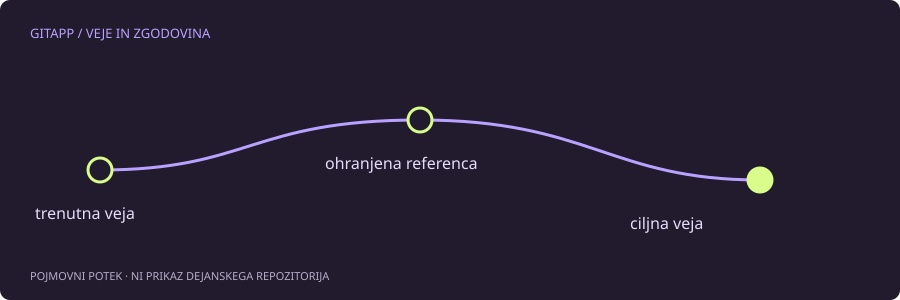

Napačno ime veje še ne pomeni izgubljenega dela
Če si spremembo potrdil na napačni veji, je vsebina praviloma še v repozitoriju. Prva naloga je ohraniti jasno referenco do potrditve, druga pa ugotoviti, kam sprememba spada. Brisanje ali premikanje prvotne veje ni začetni korak.
Najprej preveri, katera veja je trenutna, katera potrditev vsebuje delo in ali je bilo to že objavljeno. Ukazi za pregled ne rešijo problema sami, zmanjšajo pa nevarnost, da bi popravljal napačno zgodovino.
git status
git branch --show-current
git log --oneline --decorate -n 6Zavaruj znano potrditev
Če si prepričan, da je želeno delo na trenutnem HEAD, lahko ustvariš novo, še neobstoječo vejo na tem mestu:
git branch ohrani-deloTa ukaz ustvari referenco in ne preklopi delovnega drevesa. Ime je vzorčno; izberi edinstveno ime in preveri uspeh. Takšna veja ni neodvisna varnostna kopija celega diska, pomaga pa ohraniti dostop do potrditve med nadaljnjim razmislekom.
Prenos ni isto kot odstranitev
Če ciljna veja že obstaja in potrebuje samo eno spremembo, je lahko primeren cherry-pick. Ta spremembo ponovno uporabi na ciljni veji in običajno ustvari novo potrditev z drugim identifikatorjem. Ne prestavi samodejno prvotne potrditve z napačne veje.
Pred preklopom poskrbi za nepotrjeno delo. Po prenosu preglej datoteke in preizkusi projekt. Sorodna vsebina na dveh vejah še ne pomeni, da lahko eno brez premisleka odstraniš.
Kaj ostane na izvorni veji
Če je napačna potrditev že objavljena, je odstranitev z resetiranjem in prisilnim pošiljanjem lahko problem za druge. Včasih je primerneje njen učinek obrniti z novo potrditvijo. Če je veja samo lokalna, je možnosti več, vendar moraš še vedno poznati ciljno stanje in ohraniti delo.
Ne izvajaj reset --hard zgolj zato, ker si prej ustvaril pomožno vejo. Ta lahko ohrani potrjeno zgodovino, ne pa nujno vseh nepripravljenih datotek. Za njih potrebuješ ločeno zaščito.
Poseben primer brez potrditve
Če delo še ni potrjeno, se problem nanaša na delovno drevo in pripravo, ne na prenos potrditve. Preklop je lahko dovoljen ali zavrnjen glede na prekrivanje sprememb. V takem primeru najprej ugotovi stanje in izberi nameren način ohranitve vsebine.
Merilo uspeha ni samo pravilno ime veje v pozivu terminala. Preveri, da ciljna veja vsebuje želeno spremembo, da je izvorna veja v dogovorjenem stanju in da nobena druga lokalna vsebina ni bila izgubljena.
Vir in obseg
Referenca: uradni priročnik za git-branch. Primeri so pripravljeni za učenje in niso opis posega v dejanski projekt. Preberi način preverjanja.